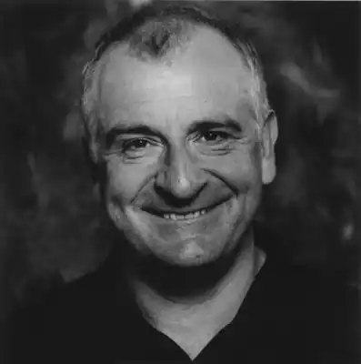
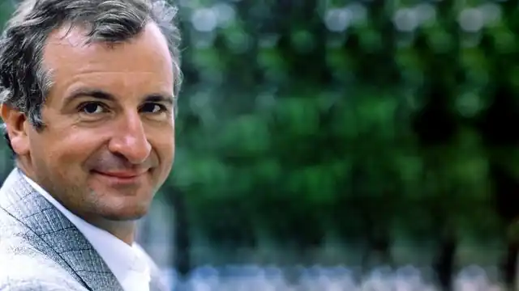
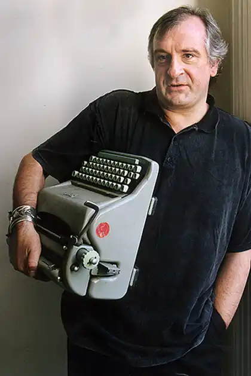

Дуглас Ноел Адамс (англ. Douglas Noël Adams; 11 березня 1952, Кембридж — 11 травня 2001, Санта-Барбара, Каліфорнія, США) — британський комічний радіодраматург, письменник. Автор книги "Путівник по Галактиці для космотуристів".
Життєпис
Дуглас Адамс народився 11 березня 1952 року в Кембриджі. Закінчив школу в Брентвуді. Навчався в коледжі, у 1974 році одержав ступінь бакалавра, а пізніше — магістра. Спеціалізувався на англійській літературі. У березні 1978 року на радіо BBC стартувала його чотирьохсерійна постановка "Путівник по Галактиці для космотуристів" ("The Hitchhiker's Guide to the Galaxy"), яка зробила його знаменитим. У 1979 році її було номіновано в категорії "Краща драматична постановка" ("Better Dramatic Presentation"), але програла Супермену ("Superman"). Проте вона одержала "Imperial Tobacco Award"(1978), "Sony Award" (1979), "Best Programme for Young People" (1980). Через деякий час Дуглас Адамс випустив однойменну книгу, яка також мала успіх і в 1984 році очолила список англійських бестселерів. Дуглас Адамс став наймолодшим письменником, який отримав Golden Pan (нагороду присуджують за мільйон проданих книг). "Путівник по Галактиці" — одна з небагатьох книг написаних в жанрі гумористичної фантастики. Головний герой серії — землянин Артур Дент. Для нього книга починається в четвер, але в Артура по четвергах все негаразд — так що спочатку його будинок зносять, щоб прокласти шосе, потім його планету знищують, щоб прокласти гіперпросторовий маршрут, а потім Артур опиняється серед брудної білизни в коморі одного з вогонських кораблів (вогони — це ті самі суб'єкти, які знищили Землю). Чималу роль у пригодах Артура грає Форд Префект, що власне і рятує Артура від загибелі під час знищення Землі. Форд подорожує по Галактиці автостопом, і це багато чого пояснює... Крім того, чим все це закінчитися... Як би там не було, але Адамс написав продовження — "Ресторан На Краю Всесвіту" ("The Restaurant at the End of the Universe") (1980) і "Життя, Всесвіт і Все інше" ("Life, The Universe and Everything") (1982)... 1982 року книги Адамса потрапили в New York Times Bestsellers' List і Publishers' Weekly Bestsellers' List — вперше з часів Яна Флемінга (творця Джеймса Бонда) англійському письменникові вдається домогтися такого успіху в Америці. Того ж року перші його дві книги адаптували для шестисерійної телевізійної постановки, яка пізніше отримала нагороди в категоріях "Best TV Graphics", "Best VTR Editing" та "Best Sound". 1984 року з'явилася четверта книга серії — "Бувай і дякую за рибу" ("So Long and Thanks for all the Fish"). У 1984 Дуглас Адамс разом Джоном Ллойдом (Jhon Lloud) написав нефантастичну книгу "Meaning of Liff". Книга також мала успіх і в 1990 вийшло продовження — "The Deeper Meaning of Liff". У 1985 році Дуглас Адамс почав співпрацю з компанією Infocom, яка в ті роки була "королем" жанру пригодницьких ігор, і випустив чудову інтерактивну гру "The Hitchhiker's Guide to Galaxy". Гра отримала премії від "Thames TV" і на думку багатьох є кращою науково-фантастичній чи гумористичною (залежно від точки зору) грою Infocom'у. Пізніше Адамс написав ще одну гумористичну гру — "Bureaucracy" У 1987 році Адамс спробував свої сили в дещо іншому жанрі і випустив книгу "Детективне агентство Дірка Джентлі" ("Dirk Gently's Holistic Detective Agency"). Це дивна суміш містики, детективу, гумору і всього іншого. Нажаль цю книгу недооцінили. Проте через рік вийшло продовження — "Довге чаювання" ("Long Dark Tea-time of the Soul"). У 1990 Адамс разом із зоологом Марком Карвардайном випускає книгу про рідкісні й зникаючі види тварин "Last Chance to See". У 1991 році аудіокнига "HHGG", потрапила в номінацію "Best Spoken Word Recording" престижної премії "Греммі" (Grammy). Ще через рік Адамс написав заключну, п'яту книгу "Путівника" — "Майже безпечно" ("Mostly Harmless"). У 1993 відеофільм "Making Of HHGG" був номінований на "Best Documentary" у Video Home Entertainment Awards. У 1996 "The Hitchhiker's Guide to the Galaxy" займає 24 місце в списку "Сто Найбільших книг Сторіччя" від "Waterstone's Books/Channel Four". У 1998 році Адамс заснував компанію "The Digital Villiage", яка того ж року випустила унікальну пригодницьку гру "Starship Titanic". В останні роки життя Дуглас Адамс писав новий роман і допомагав студії "Дісней" (Disney Studios) зняти повнометражний фільм "Автостопом по Галактиці". (Він сказав з цього приводу: "Так я знаю, що "Дісней" зняв "Бембі", але не забувайте, що він також зняв і "Термінатора". Я сподіваюся, що "Путівник..." буде чимось середнім між цими двома фільмами..." Дуглас Адамс помер від серцевого нападу 11 травня 2001 року.